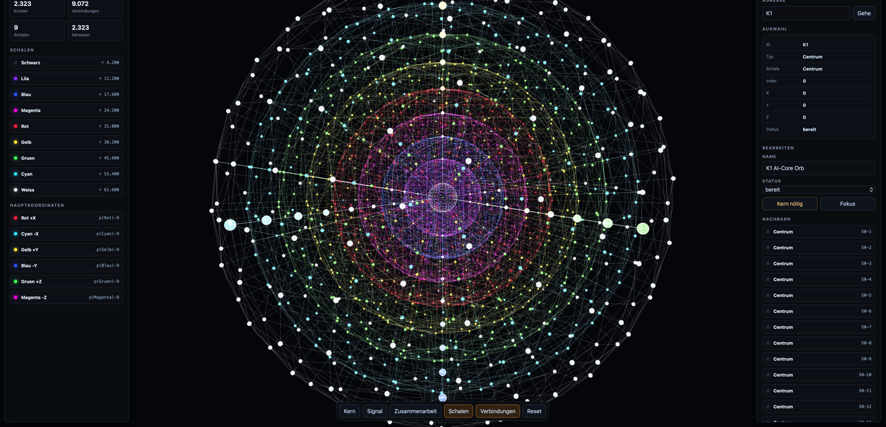
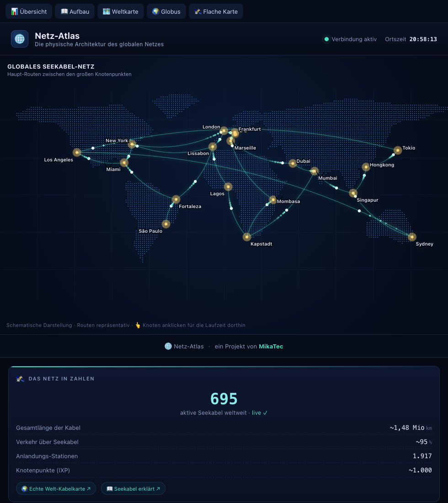
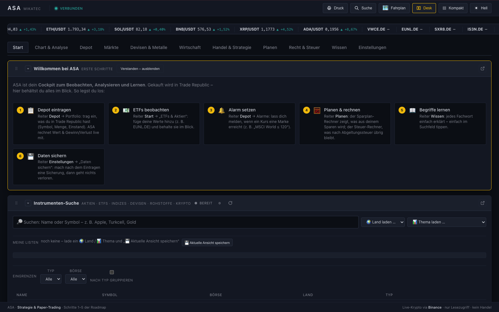
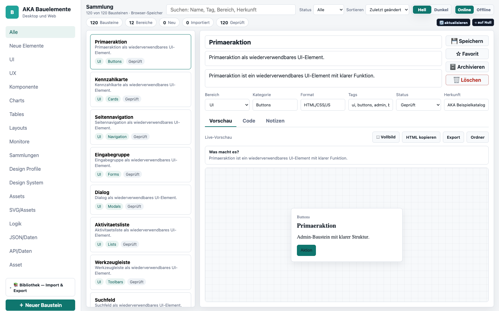
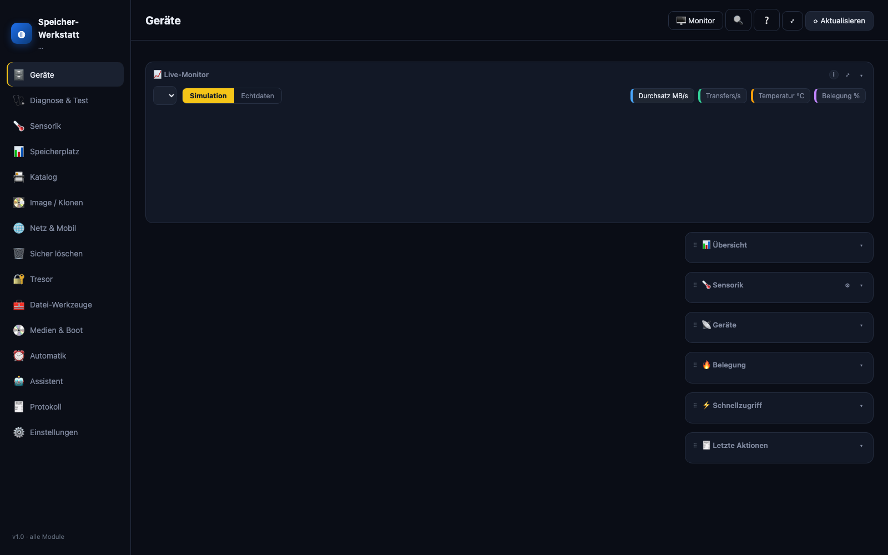
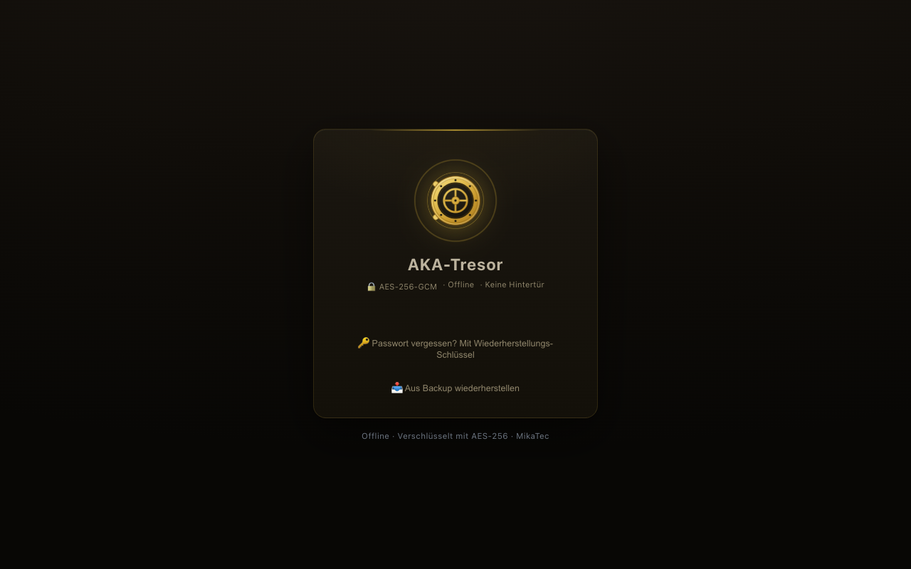

Projekte — gezeigt und erklärt
Erst der Überblick über die ganze Werkstatt — darunter sieben Projekte im Detail, mit echten Screenshots statt Vorlagen.
Sieben Projekte, gezeigt und erklärt
Echte Screenshots, echte Funktionen — einige laufen täglich, andere werden aktiv weitergebaut.

NEXUS
Mein Langzeit-Vorhaben: eine KI-Zentrale, die Rechner, Firmen-Software und Alltag verbindet — KI nicht als Zusatzfunktion, sondern als Architektur-Prinzip. Das Struktur-Netz bildet Wissen räumlich ab, vom KI-Kern K1 bis in die äußerste Schale.
- KI-Gehirn-Simulation: 2.323 adressierbare Knoten in 9 Schalen, mit Signalfluss
- Gedächtnis, Regelwerk und KI-Agenten — mit klaren Berechtigungen, lokal und privat
- Verteilter Verbund: mehrere Nexus-Instanzen auf verschiedenen Rechnern als ein System

Netz-Atlas
Ein interaktiver Atlas des weltweiten Internets: Wie hängt die Welt physisch zusammen — Seekabel, Knotenpunkte, Laufzeiten? Dazu misst die Seite live die eigene Verbindung des Besuchers.
- Seekabel-Weltkarte mit Haupt-Routen und Knotenpunkten
- Live-Messung von Ping, Download und Upload direkt im Browser
- Erkennt Standort, Anbieter und Verbindungstyp des Besuchers

ASA — Finanz- & Markt-Cockpit
Ein Cockpit zum Beobachten, Analysieren und Lernen an den Finanzmärkten: Kurse kommen in Echtzeit über Börsen-Schnittstellen herein — Aktien, ETFs, Devisen, Edelmetalle und Krypto in einer Oberfläche.
- Live-Marktdaten aus mehreren Quellen (u. a. Binance-Schnittstelle)
- Depot-Übersicht, Alarme, Sparplan- und Steuer-Rechner
- Markt-Ansichten: Listen, Heatmaps, Stärke-Vergleiche

AKA Bauelemente
Meine eigene Bibliothek für Oberflächen-Bausteine: hunderte geprüfte UI-Elemente mit Live-Vorschau, Code-Ansicht und Export. Damit entstehen neue Anwendungen schneller — und sehen von Anfang an durchdacht aus.
- 900+ Bausteine in über 20 Bereichen, durchsuch- und filterbar
- Live-Vorschau, Code kopieren, Sammlung exportieren/importieren
- Läuft als Desktop-App, im Browser und auf dem iPad

Speicher-Werkstatt
Ein Werkzeugkasten für externe Speicher — USB-Sticks, Festplatten, SSDs und Karten: prüfen, testen, verschlüsseln, klonen und sicher löschen, alles in einer Oberfläche mit Live-Monitor.
- Geräte-Erkennung mit Sensorik und Live-Diagrammen
- Tempo-Tests, Gesundheits-Prüfung, Katalog aller Datenträger
- Verschlüsseln (AES-256), Image/Klonen, sicheres Löschen
Viewer AKA
Ein Betrachter für medizinische Bilddaten, entstanden aus über 20 Jahren Praxis im Gesundheitswesen: DICOM-Aufnahmen öffnen, in 2D und 3D betrachten, messen, vergleichen und befunden — ohne Cloud, alle Daten bleiben auf dem Rechner.
Aus Datenschutz-Gründen zeige ich hier keine Patientenbilder — die Funktionstafel links fasst zusammen, was die Anwendung kann.

AKA-Tresor
Ein digitaler Tresor für sensible Daten: stark verschlüsselt, komplett offline, ohne Konto und ohne Abo. Entstanden, weil ich meinen sensibelsten Daten keiner Cloud anvertrauen wollte — ein Anspruch, der auch Kundenprojekten zugutekommt.
- AES-256-GCM mit Schlüssel-Ableitung über scrypt — keine Hintertür
- Keine Cloud, keine Server — alles bleibt lokal
- Auto-Sperre, Backup-Export, Papierkorb mit Wiederherstellung
Mehr als den Sperrbildschirm gibt es bewusst nicht zu sehen — ein Tresor zeigt seinen Inhalt nicht.
So etwas — aber für dein Vorhaben?
Jedes dieser Projekte hat als Idee angefangen. Erzähl mir von deiner.
Projekt anfragen